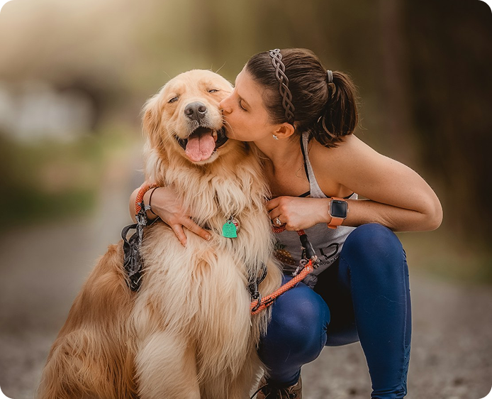
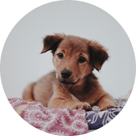

Our Story
PawLix was created with the goal of making dog adoption more accessible and organized. Many people struggle to find reliable information about dogs available for adoption, while administrators often face difficulties managing adoption records manually.
Our platform brings everything together in one place. Users can browse available dogs, view detailed information, and submit adoption requests online. At the same time, administrators can manage dog records, review applications, and keep adoption information updated through a secure management system.
By simplifying each step of the process, PawLix aims to create a better adoption experience for both adopters and administrators while helping more dogs find caring and permanent homes.

Our Mission
To simplify the dog adoption process by providing an easy-to-use online platform that connects caring adopters with dogs waiting for a loving home.
Our Vision
To build a community where every dog has the opportunity to find a safe, caring, and permanent family.
Why Choose LucyPaw?
Browse Available Dogs
Explore detailed profiles of dogs looking for a forever home.
Simple Adoption
Submit adoption requests in a few easy steps.
Track your application
Check the status of your adoption request anytime.
Safe & Secure
Your information is protected with secure user authentication.